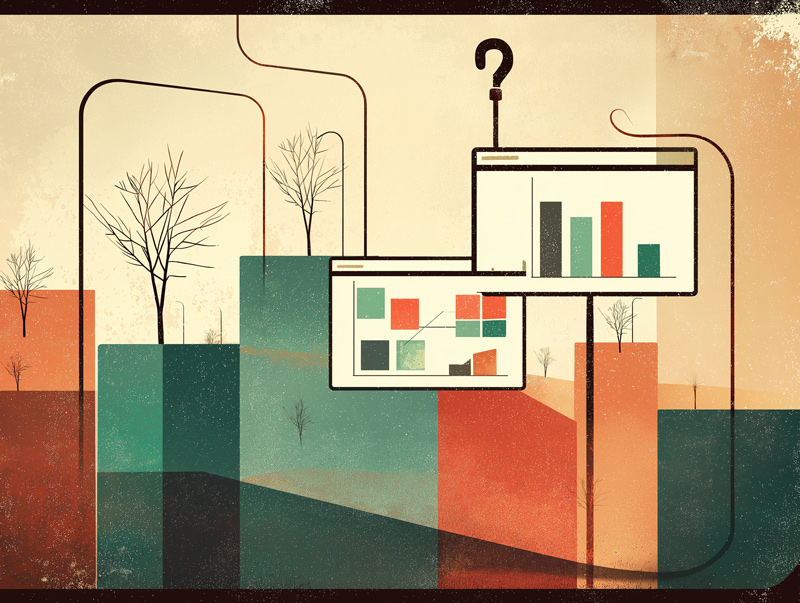

Most products do not fail because the team lacked talent. They fail because no one with outside experience looked at the thing honestly before it shipped. This is that look.
For teams who want honest outside eyes before something ships — or after it lands wrong

A single, fixed-scope engagement. We spend 60 to 90 minutes tearing down your product, dashboard, or data interface. You get a written report and a recorded walkthrough. No ongoing commitment, no retainer, no follow-up pitch.
What we look at depends on what you have. Analytics products get a structural read on how information is organized and where decisions break down. Clinical tools get evaluated against how real users behave under pressure. AI-facing interfaces get assessed for trust, transparency, and whether users will actually act on what the system tells them.
A founder is two weeks out from a major health system demo. The product has been in development for eight months. The core workflow is sound but the interface has accumulated layers of decisions made under deadline pressure. Nobody has looked at it as a whole since the initial mockups.
We spend ninety minutes walking through the product end to end. The written report identifies every issue ranked by severity, separating the things that will kill the demo from the things that are worth fixing later. In most products at this stage there are two or three genuinely critical problems buried under a longer list of friction points. We find them, show exactly where they are, and tell you what to do about each one before you walk into that room.
$1,500 to $2,500 depending on product complexity. Fixed fee. Delivered in five business days.